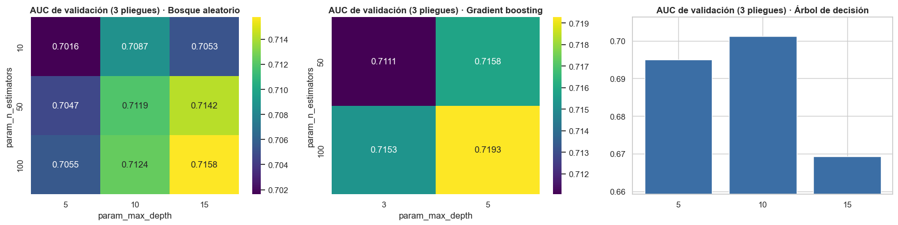
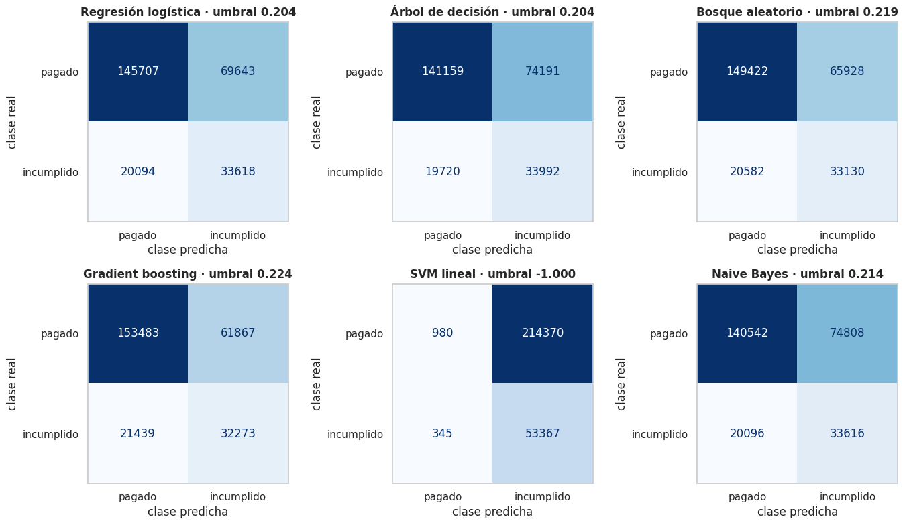

2 · Preprocesamiento y modelado con scikit-learn (seis modelos)#
Objetivo del capítulo. Se prepara la tabla de modelado, se lee la partición común 80/20 (la misma
que usará PySpark), se entrenan seis modelos con GridSearchCV sin Pipeline
(scoring="roc_auc", n_jobs=-1, 3 pliegues), se evalúan en el conjunto de
prueba y se guardan las puntuaciones continuas del conjunto de prueba para la prueba de DeLong del capítulo 5.
Decisión |
Motivo |
|---|---|
Partición común (80/20, estratificada, semilla 42) leída de un archivo |
Ambos entornos deben usar exactamente los mismos préstamos: la prueba de DeLong compara AUC calculados sobre las mismas observaciones |
3 pliegues fijos y estratificados, guardados en el mismo archivo ( |
scikit-learn y el |
|
El |
Imputación sin parámetros aprendidos (centinela −1); codificación y escalado sí los aprenden |
El preprocesamiento se ajusta antes de la validación cruzada; ver la comprobación de la sección 2.6 |
Umbral elegido con predicciones fuera de pliegue del entrenamiento |
Elegirlo con el conjunto de prueba lo contaminaría |
El conjunto de prueba no interviene en ninguna decisión de modelado |
Elegir variables, hiperparámetros o umbral mirando el conjunto de prueba produce estimaciones optimistas |
Mostrar el código
import gc
import json
import os
import platform
import sys
import time
import warnings
from pathlib import Path
import joblib
import matplotlib.pyplot as plt
import numpy as np
import pandas as pd
import psutil
import seaborn as sns
import sklearn
from IPython.display import display
from sklearn.ensemble import RandomForestClassifier
from sklearn.inspection import permutation_importance
from sklearn.linear_model import LogisticRegression
from sklearn.metrics import (ConfusionMatrixDisplay, RocCurveDisplay, average_precision_score, roc_auc_score)
from sklearn.model_selection import GridSearchCV, cross_val_predict, cross_val_score
from sklearn.pipeline import make_pipeline
from sklearn.preprocessing import StandardScaler
sys.path.insert(0, str(Path.cwd().parent))
from src import lc_models as lm # noqa: E402
from src import lc_utils as lc # noqa: E402
warnings.filterwarnings("ignore", category=FutureWarning)
warnings.filterwarnings("ignore", category=UserWarning, message=".*n_jobs.*")
pd.set_option("display.width", 220)
pd.set_option("display.max_columns", 30)
pd.set_option("display.float_format", lambda v: f"{v:,.4f}")
sns.set_theme(style="whitegrid", context="notebook")
plt.rcParams.update({"figure.dpi": 100, "axes.titleweight": "bold"})
RESULTS, DATA_DIR = Path("../resultados"), Path("../data")
RESULTS.mkdir(exist_ok=True)
(DATA_DIR / "models").mkdir(parents=True, exist_ok=True)
N_CPU = os.cpu_count()
TIMES = {} # tiempos (segundos) -> se guardan para la comparación con PySpark
print(f"Python {platform.python_version()} · scikit-learn {sklearn.__version__} · pandas {pd.__version__} "
f"· {N_CPU} hilos lógicos · RAM {psutil.virtual_memory().total / 1e9:.1f} GB")
Python 3.10.21 · scikit-learn 1.3.0 · pandas 2.1.0 · 12 hilos lógicos · RAM 16.9 GB
2.1 Carga y tabla de modelado#
Se lee el CSV completo (todas las filas; solo se eligen las 24 columnas necesarias para no gastar memoria) y se construye la tabla con solo los préstamos de desenlace conocido.
Mostrar el código
t0 = time.time()
raw = lc.load_raw(usecols=lc.RAW_COLUMNS)
TIMES["carga_csv"] = time.time() - t0
print(f"Carga del CSV: {raw.shape[0]:,} filas × {raw.shape[1]} columnas en {TIMES['carga_csv']:.1f} s")
t0 = time.time()
m = lc.build_model_frame(raw)
TIMES["features"] = time.time() - t0
del raw
gc.collect()
print(f"Tabla de modelado: {m.shape[0]:,} filas · features en {TIMES['features']:.1f} s")
print(f"Tasa de incumplimiento: {m['default'].mean():.4%}")
Carga del CSV: 2,260,701 filas × 24 columnas en 26.9 s
Tabla de modelado: 1,345,310 filas · features en 10.8 s
Tasa de incumplimiento: 19.9626%
2.2 Partición común y pliegues fijos#
La partición ya se hizo en el capítulo de EDA, antes de explorar nada, y se guardó en
data/split_ids.parquet con las columnas id y split (train / test), más fold (pliegue
0, 1 o 2 de las filas de entrenamiento, estratificado por default). Aquí se lee y, como
comprobación de reproducibilidad, se vuelve a calcular y se verifica que sea idéntica. El capítulo de
PySpark lee ese mismo archivo.
Mostrar el código
split = pd.read_parquet(DATA_DIR / "split_ids.parquet")
recalculada = lc.make_split(m)
assert split["id"].equals(recalculada["id"]) and (split["split"] == recalculada["split"]).all() \
and (split["fold"] == recalculada["fold"]).all(), "La partición guardada no coincide con la recalculada"
print("Partición guardada = partición recalculada: OK (misma semilla, mismos datos)")
es_test = (split["split"] == "test").to_numpy()
idx_train, idx_test = np.flatnonzero(~es_test), np.flatnonzero(es_test)
train, test = m.iloc[idx_train].reset_index(drop=True), m.iloc[idx_test].reset_index(drop=True)
y_train, y_test = train["default"].to_numpy(), test["default"].to_numpy()
fold = split.loc[~es_test, "fold"].to_numpy()
FOLDS = [(np.flatnonzero(fold != k), np.flatnonzero(fold == k)) for k in range(3)] # (entrenar, validar)
resumen_split = pd.DataFrame({
"filas": [len(train), len(test)],
"% del total": [100 * len(train) / len(m), 100 * len(test) / len(m)],
"tasa de default": [train["default"].mean(), test["default"].mean()]}, index=["entrenamiento", "prueba"])
display(resumen_split)
display(pd.DataFrame({"filas de validación": [len(v) for _, v in FOLDS],
"tasa de default": [y_train[v].mean() for _, v in FOLDS]},
index=[f"pliegue {k}" for k in range(3)]))
Partición guardada = partición recalculada: OK (misma semilla, mismos datos)
| filas | % del total | tasa de default | |
|---|---|---|---|
| entrenamiento | 1076248 | 80.0000 | 0.1996 |
| prueba | 269062 | 20.0000 | 0.1996 |
| filas de validación | tasa de default | |
|---|---|---|
| pliegue 0 | 358750 | 0.1996 |
| pliegue 1 | 358749 | 0.1996 |
| pliegue 2 | 358749 | 0.1996 |
2.3 Preprocesamiento#
Numéricas (17): los nulos se rellenan con el centinela −1 (sin parámetros aprendidos).
Categóricas (4): One-Hot; las categorías con menos del 1 % del entrenamiento se agrupan como «infrecuente» (las categorías nuevas del conjunto de prueba también).
Escalado (
StandardScaler): solo para la regresión logística y la SVM lineal, que son sensibles a la escala. Los árboles, el gradient boosting y Naive Bayes trabajan con las variables sin escalar. El escalador se ajusta solo con el entrenamiento.
Mostrar el código
t0 = time.time()
prep = lc.make_preprocessor()
X_train = prep.fit_transform(train[lc.FEATURES]).astype(np.float32)
X_test = prep.transform(test[lc.FEATURES]).astype(np.float32)
scaler = StandardScaler().fit(X_train)
Xs_train, Xs_test = scaler.transform(X_train).astype(np.float32), scaler.transform(X_test).astype(np.float32)
TIMES["preprocesamiento"] = time.time() - t0
feature_names = prep.get_feature_names_out()
print(f"X_train: {X_train.shape} · X_test: {X_test.shape} · dtype {X_train.dtype} "
f"· {X_train.nbytes / 1e9:.2f} GB · preprocesamiento en {TIMES['preprocesamiento']:.1f} s")
enc = prep.named_transformers_["cat"]
infrecuentes = {c: sorted(i.tolist()) if i is not None else []
for c, i in zip(lc.CATEGORICAL, enc.infrequent_categories_)}
(RESULTS / "categorias_infrecuentes.json").write_text(json.dumps(infrecuentes, ensure_ascii=False, indent=1), encoding="utf-8")
(RESULTS / "paridad_features.json").write_text(
json.dumps({"medias": {c: float(m[c].mean()) for c in lc.NUMERIC}}, indent=1), encoding="utf-8")
X_train: (1076248, 62) · X_test: (269062, 62) · dtype float32 · 0.27 GB · preprocesamiento en 5.4 s
629
2.4 Los seis modelos y sus espacios de búsqueda#
Son los mismos que en PySpark (Tabla 2.1). Equivalencias que conviene tener presentes (se retoman en la discusión final):
Regularización L2 en ambos entornos. En la regresión logística y la SVM lineal, PySpark usa
regParam ∈ {1e-6, 1e-5, 1e-4}y scikit-learnC = 1 / (regParam × n)conn= filas de entrenamiento. La relación es aproximada:Cpondera la suma de las pérdidas yregParamsu promedio.LinearSVC(loss="hinge"): el valor por defecto de scikit-learn es squared hinge; el de PySpark minimiza hinge, así que se fijaloss="hinge".Árboles: scikit-learn evalúa cortes exactos; PySpark discretiza cada variable continua en
maxBins = 32intervalos.Naive Bayes gaussiano en ambos, sin búsqueda de hiperparámetros.
Decisión sobre el gradient boosting. GradientBoostingClassifier es secuencial (no usa varios
hilos dentro de un ajuste) y con 1.08 millones de filas es el modelo más lento de este capítulo. Si su
costo resultara prohibitivo, la alternativa natural es HistGradientBoostingClassifier. Se fijó de
antemano un presupuesto de cómputo de 3 horas para la malla completa (12 ajustes) más el reajuste, y se
decide con una medición corta (10 árboles, profundidad 5, 100 000 filas), extrapolada al tamaño real
de un ajuste (100 árboles con las filas de dos pliegues).
Mostrar el código
N_TRAIN = len(y_train)
_gb = lm.sk_specs(N_TRAIN)["GB"][0]
_gb.set_params(n_estimators=10, max_depth=5)
_k = 100_000
t0 = time.time()
_gb.fit(X_train[:_k], y_train[:_k])
_t10 = time.time() - t0
_fila_pliegue = 2 * N_TRAIN // 3
_por_ajuste = _t10 / 10 * 100 * _fila_pliegue / _k # 100 árboles con las filas de un pliegue de entrenamiento
_estimado = (12 / N_CPU * 0.6 + 1) * _por_ajuste * 1.5 # 12 ajustes en paralelo (aprox.) + reajuste con todo el train
GB_HIST = bool(_estimado > 3 * 3600)
print(f"10 árboles (prof. 5) con {_k:,} filas: {_t10:.1f} s → un ajuste de 100 árboles con {_fila_pliegue:,} filas ≈ "
f"{_por_ajuste / 60:.1f} min · costo estimado de malla + reajuste ≈ {_estimado / 60:.0f} min")
print("Decisión:", "HistGradientBoostingClassifier (costo prohibitivo)" if GB_HIST else "GradientBoostingClassifier (costo aceptable)")
del _gb
10 árboles (prof. 5) con 100,000 filas: 10.3 s → un ajuste de 100 árboles con 717,498 filas ≈ 12.3 min · costo estimado de malla + reajuste ≈ 29 min
Decisión: GradientBoostingClassifier (costo aceptable)
Mostrar el código
specs = lm.sk_specs(N_TRAIN, gb_hist=GB_HIST)
tabla = pd.DataFrame([{"modelo": lm.NOMBRES[k], "estimador": type(e).__name__,
"espacio de búsqueda": json.dumps({a: [round(v, 5) if isinstance(v, float) else v for v in vals]
for a, vals in g.items()}) or "—",
"combinaciones": int(np.prod([len(v) for v in g.values()])) if g else 1,
"datos": "escalados" if lm.USA_ESCALADO.get(k) else "sin escalar"}
for k, (e, g, _) in specs.items()])
display(tabla)
print(f"n de entrenamiento = {N_TRAIN:,} → C = " + ", ".join(f"{lm.c_from_reg(r, N_TRAIN):.5f}" for r in lm.REG_PARAMS)
+ " para regParam = " + ", ".join(f"{r:g}" for r in lm.REG_PARAMS))
print(f"Total de ajustes con 3 pliegues: {sum((int(np.prod([len(v) for v in g.values()])) if g else 1) * 3 for _, g, _ in specs.values())} "
"+ un reajuste final por modelo")
| modelo | estimador | espacio de búsqueda | combinaciones | datos | |
|---|---|---|---|---|---|
| 0 | Regresión logística | LogisticRegression | {"C": [0.92915, 0.09292, 0.00929]} | 3 | escalados |
| 1 | Árbol de decisión | DecisionTreeClassifier | {"max_depth": [5, 10, 15]} | 3 | sin escalar |
| 2 | Bosque aleatorio | RandomForestClassifier | {"n_estimators": [10, 50, 100], "max_depth": [... | 9 | sin escalar |
| 3 | Gradient boosting | GradientBoostingClassifier | {"n_estimators": [50, 100], "max_depth": [3, 5]} | 4 | sin escalar |
| 4 | SVM lineal | LinearSVC | {"C": [0.92915, 0.09292, 0.00929]} | 3 | escalados |
| 5 | Naive Bayes | GaussianNB | {} | 1 | sin escalar |
n de entrenamiento = 1,076,248 → C = 0.92915, 0.09292, 0.00929 para regParam = 1e-06, 1e-05, 0.0001
Total de ajustes con 3 pliegues: 69 + un reajuste final por modelo
2.5 Entrenamiento con validación cruzada (los seis modelos)#
Para cada modelo: GridSearchCV sin Pipeline, con los 3 pliegues fijos, scoring="roc_auc",
n_jobs=-1 (los ajustes de la malla se reparten entre los hilos) y refit=True (el mejor modelo se
reajusta con todo el entrenamiento). El tiempo de entrenamiento incluye la validación cruzada y el
reajuste. Después:
se mide el tiempo de predicción sobre el conjunto de prueba y se guarda la puntuación continua (
predict_proba[:, 1]; enLinearSVC,decision_function);se calculan puntuaciones fuera de pliegue del entrenamiento (
cross_val_predictcon los mismos pliegues) para elegir el umbral sin usar el conjunto de prueba.
Mostrar el código
def clone_best(est):
from sklearn.base import clone
return clone(est)
def entrenar(clave: str) -> dict:
est, grid, tipo = specs[clave]
esc = lm.USA_ESCALADO.get(clave, False)
Xtr, Xte = (Xs_train, Xs_test) if esc else (X_train, X_test)
r = {"clave": clave, "modelo": lm.NOMBRES[clave], "escalado": esc, "tipo_puntuacion": tipo}
t0 = time.time()
if grid:
gs = GridSearchCV(est, grid, cv=FOLDS, scoring="roc_auc", n_jobs=-1, refit=True, return_train_score=True)
gs.fit(Xtr, y_train)
best, r["mejores_hiperparametros"] = gs.best_estimator_, {k: float(v) if isinstance(v, (float, np.floating)) else int(v)
for k, v in gs.best_params_.items()}
r["auc_cv"], r["auc_cv_sd"] = float(gs.best_score_), float(gs.cv_results_["std_test_score"][gs.best_index_])
cvres = pd.DataFrame(gs.cv_results_)
cvres = cvres[[c for c in cvres.columns if c.startswith("param_") or c in
("mean_test_score", "std_test_score", "mean_train_score", "mean_fit_time", "rank_test_score")]]
cvres.to_csv(RESULTS / f"sk_cv_{clave}.csv", index=False)
r["auc_train_cv_mean"] = float(gs.cv_results_["mean_train_score"][gs.best_index_])
else: # Naive Bayes: sin búsqueda de hiperparámetros
aucs = cross_val_score(est, Xtr, y_train, cv=FOLDS, scoring="roc_auc")
best = est.fit(Xtr, y_train)
r["mejores_hiperparametros"], r["auc_cv"], r["auc_cv_sd"] = {}, float(aucs.mean()), float(aucs.std(ddof=1))
r["t_entrenamiento_con_cv_s"] = time.time() - t0
t0 = time.time()
s_test = lm.score_sklearn(best, Xte, tipo)
r["t_prediccion_s"] = time.time() - t0
t0 = time.time()
oof = cross_val_predict(clone_best(best), Xtr, y_train, cv=FOLDS, n_jobs=3,
method="predict_proba" if tipo == "proba" else "decision_function")
oof = oof[:, 1] if tipo == "proba" else oof
r["t_oof_umbral_s"] = time.time() - t0
r["umbral_f1"] = lc.best_f1_threshold(y_train, oof)
r["umbral_defecto"] = 0.5 if tipo == "proba" else 0.0
r["auc_oof"] = float(roc_auc_score(y_train, oof))
r["auc_test"] = float(roc_auc_score(y_test, s_test))
r["auc_train_reajustado"] = float(roc_auc_score(y_train, lm.score_sklearn(best, Xtr, tipo)))
return r, best, s_test, oof
Mostrar el código
RES, BEST, SCORES_TEST, SCORES_OOF = {}, {}, {}, {}
for clave in lm.CLAVES:
t_ini = time.time()
RES[clave], BEST[clave], SCORES_TEST[clave], SCORES_OOF[clave] = entrenar(clave)
r = RES[clave]
print(f"{r['modelo']:<22} mejores {r['mejores_hiperparametros']} · AUC CV {r['auc_cv']:.4f} ± {r['auc_cv_sd']:.4f} "
f"· entrenamiento+CV {r['t_entrenamiento_con_cv_s']:.0f} s · predicción {r['t_prediccion_s']:.1f} s "
f"· umbral OOF {r['umbral_f1']:.3f} · (total {time.time() - t_ini:.0f} s)", flush=True)
gc.collect()
Regresión logística mejores {'C': 0.9291538753149833} · AUC CV 0.7096 ± 0.0002 · entrenamiento+CV 15 s · predicción 0.1 s · umbral OOF 0.204 · (total 22 s)
Árbol de decisión mejores {'max_depth': 10} · AUC CV 0.7013 ± 0.0002 · entrenamiento+CV 59 s · predicción 0.1 s · umbral OOF 0.204 · (total 79 s)
Bosque aleatorio mejores {'max_depth': 15, 'n_estimators': 100} · AUC CV 0.7158 ± 0.0001 · entrenamiento+CV 837 s · predicción 5.7 s · umbral OOF 0.219 · (total 1096 s)
Gradient boosting mejores {'max_depth': 5, 'n_estimators': 100} · AUC CV 0.7193 ± 0.0003 · entrenamiento+CV 3267 s · predicción 1.3 s · umbral OOF 0.224 · (total 4043 s)
SVM lineal mejores {'C': 0.009291538753149831} · AUC CV 0.5015 ± 0.0157 · entrenamiento+CV 624 s · predicción 0.2 s · umbral OOF -1.000 · (total 683 s)
Naive Bayes mejores {} · AUC CV 0.6887 ± 0.0008 · entrenamiento+CV 5 s · predicción 0.5 s · umbral OOF 0.214 · (total 10 s)
La estimación preliminar de 2.4 (≈ 29 min) resultó inferior al costo real de la malla completa más el reajuste del gradient boosting (≈ 54 min, 3267 s): la extrapolación lineal desde 10 árboles subestima el costo de una malla con más combinaciones y árboles más profundos.
Hallazgo: la SVM lineal converge a una solución degenerada a esta escala#
El AUC de la SVM lineal resultó ≈ 0.50 (equivalente al azar) con los tres valores de C de la malla
(tabla siguiente). Antes de reportarlo, se investigó si era un error
del código o un problema real del solver.
Mostrar el código
display(pd.read_csv(RESULTS / "sk_cv_SVM.csv"))
| mean_fit_time | param_C | mean_test_score | std_test_score | rank_test_score | mean_train_score |
|---|---|---|---|---|---|
| 532.306331 | 0.929154 | 0.492636 | 0.020450 | 2 | 0.491007 |
| 419.422331 | 0.092915 | 0.488213 | 0.020191 | 3 | 0.487672 |
| 65.196156 | 0.009292 | 0.501535 | 0.015664 | 1 | 0.501974 |
Diagnóstico. Se ajusta LinearSVC(loss="hinge") (el C que ganó la malla, que es el menor: 0.0093) sobre un subconjunto de
700 000 filas (el tamaño aproximado de dos pliegues) y se inspeccionan los coeficientes, el intercepto y
el número de iteraciones que usó el solver.
Mostrar el código
import warnings as _warnings
from sklearn.svm import LinearSVC as _LinearSVC
_sub = 700_000
with _warnings.catch_warnings(record=True) as _w:
_warnings.simplefilter("always")
_m_diag = _LinearSVC(loss="hinge", C=specs["SVM"][1]["C"][-1], max_iter=1000, random_state=lc.SEED).fit(
Xs_train[:_sub], y_train[:_sub])
_s_diag = _m_diag.decision_function(Xs_test)
_w_relevantes = [str(x.message)[:150] for x in _w if x.category is not FutureWarning] # se ignora el aviso de `dual` (ajeno a la convergencia)
print(f"Ajuste con {_sub:,} filas · C = {specs['SVM'][1]['C'][-1]:.4f} · iteraciones usadas: {_m_diag.n_iter_} "
f"(máximo permitido: 1000) · advertencias de convergencia: {_w_relevantes or 'ninguna'}")
print(f"Desviación estándar de la función de decisión en el test: {_s_diag.std():.3e} (prácticamente constante)")
print(f"Coeficientes: media |coef| = {abs(_m_diag.coef_).mean():.3e} · máximo |coef| = {abs(_m_diag.coef_).max():.3e} "
f"· intercepto = {_m_diag.intercept_[0]:.4f}")
print(f"AUC con este ajuste de diagnóstico: {roc_auc_score(y_test, _s_diag):.4f}")
Ajuste con 700,000 filas · C = 0.0093 · iteraciones usadas: 93 (máximo permitido: 1000) · advertencias de convergencia: ninguna
Desviación estándar de la función de decisión en el test: 1.822e-13 (prácticamente constante)
Coeficientes: media |coef| = 3.795e-09 · máximo |coef| = 2.170e-08 · intercepto = -1.0000
AUC con este ajuste de diagnóstico: 0.5191
El solver converge (93 iteraciones de un máximo de 1000, sin ninguna advertencia de no convergencia), pero a una solución degenerada: los coeficientes son del orden de 10⁻⁸-10⁻⁹ y el intercepto queda en −1.0, es decir, el modelo aprende a «predecir siempre la clase negativa con el margen máximo» en vez de separar las clases. Las puntuaciones resultantes son prácticamente constantes (desviación estándar de 1.8×10⁻¹³ en la función de decisión), lo que explica que el AUC (0.52 en este subconjunto de diagnóstico, 0.4956 con el ajuste completo) equivalga al azar y no a un modelo peor que el azar.
Es compatible con la solución degenerada de la SVM con pérdida hinge descrita por Rifkin, Pontil y
Verri (1999): cuando las clases se solapan mucho y la clase mayoritaria cuadruplica a la minoritaria, el
punto w = 0, b = −1 puede ser el óptimo del problema regularizado, y liblinear refuerza el efecto
porque también regulariza el intercepto. Es la explicación más probable a partir de la evidencia
disponible (un solo ajuste de diagnóstico, con precisión float32 y max_iter = 1000); no se repitió con
otra precisión numérica ni con más iteraciones, así que no se descarta que esos factores también
influyan, aunque el solver ya convergió sin advertencias en muchas menos iteraciones que el límite.
loss="hinge" no puede cambiarse por squared_hinge (que sí admite el solver primal, mejor
comportado a gran escala), porque debe coincidir con la pérdida que minimiza el LinearSVC de PySpark
para que la comparación entre motores sea válida. El resultado (AUC ≈ 0.50) se reporta tal cual. La
discusión final compara este resultado con el de PySpark, cuyo optimizador es distinto.
2.6 Resumen de la validación cruzada#
AUC de entrenamiento es el AUC del modelo reajustado evaluada sobre el propio entrenamiento
(una medida de sobreajuste, no de calidad): la brecha con el AUC de validación indica cuánto
memoriza el modelo.
Mostrar el código
resumen = pd.DataFrame([{
"modelo": r["modelo"], "mejores hiperparámetros": json.dumps(r["mejores_hiperparametros"]),
"AUC CV": r["auc_cv"], "± sd (pliegues)": r["auc_cv_sd"], "AUC entrenamiento": r["auc_train_reajustado"],
"brecha (train − CV)": r["auc_train_reajustado"] - r["auc_cv"],
"tiempo entrenamiento + CV (s)": r["t_entrenamiento_con_cv_s"], "tiempo predicción test (s)": r["t_prediccion_s"]}
for r in RES.values()]).set_index("modelo")
display(resumen)
resumen.to_csv(RESULTS / "sk_resumen_modelos.csv")
fig, ax = plt.subplots(1, 3, figsize=(17, 4.4))
for a, clave in zip(ax, ["RF", "GB", "DT"]):
cv_ = pd.read_csv(RESULTS / f"sk_cv_{clave}.csv")
pcols = [c for c in cv_.columns if c.startswith("param_")]
if len(pcols) == 2:
pv = cv_.pivot(index=pcols[1], columns=pcols[0], values="mean_test_score")
sns.heatmap(pv, annot=True, fmt=".4f", cmap="viridis", ax=a)
else:
a.bar(cv_[pcols[0]].astype(str), cv_["mean_test_score"], color="#3b6ea5")
a.set_ylim(cv_["mean_test_score"].min() - 0.01, cv_["mean_test_score"].max() + 0.005)
a.set_title(f"AUC de validación (3 pliegues) · {lm.NOMBRES[clave]}")
plt.tight_layout()
plt.show()
| mejores hiperparámetros | AUC CV | ± sd (pliegues) | AUC entrenamiento | brecha (train − CV) | tiempo entrenamiento + CV (s) | tiempo predicción test (s) | |
|---|---|---|---|---|---|---|---|
| modelo | |||||||
| Regresión logística | {"C": 0.9291538753149833} | 0.7096 | 0.0002 | 0.7098 | 0.0002 | 14.7217 | 0.0664 |
| Árbol de decisión | {"max_depth": 10} | 0.7013 | 0.0002 | 0.7151 | 0.0138 | 59.3327 | 0.0527 |
| Bosque aleatorio | {"max_depth": 15, "n_estimators": 100} | 0.7158 | 0.0001 | 0.7931 | 0.0773 | 837.4360 | 5.7464 |
| Gradient boosting | {"max_depth": 5, "n_estimators": 100} | 0.7193 | 0.0003 | 0.7239 | 0.0047 | 3,266.7211 | 1.2660 |
| SVM lineal | {"C": 0.009291538753149831} | 0.5015 | 0.0157 | 0.4951 | -0.0065 | 623.7369 | 0.1969 |
| Naive Bayes | {} | 0.6887 | 0.0008 | 0.6889 | 0.0002 | 4.8391 | 0.5221 |


Comprobación: ¿filtra información el escalado fuera de la validación cruzada?#
Para que ambos entornos partan de matrices idénticas, los transformadores (codificación one-hot con
agrupación de categorías infrecuentes y estandarización) se ajustan una sola vez con todo el
entrenamiento, antes de la validación cruzada. Para la regresión logística y la SVM lineal esto hace
que la media y la desviación de cada pliegue de validación entren en el escalado: una fuga leve, porque
son estadísticos sin la etiqueta. Para acotarla, se repite la búsqueda de la regresión logística con
Pipeline, que reajusta el escalador dentro de cada pliegue, y se compara.
Mostrar el código
t0 = time.time()
gs_pipe = GridSearchCV(make_pipeline(StandardScaler(), LogisticRegression(max_iter=100, random_state=lc.SEED)),
{"logisticregression__C": specs["LR"][1]["C"]}, cv=FOLDS, scoring="roc_auc", n_jobs=-1).fit(X_train, y_train)
comp = pd.DataFrame({"AUC CV (mejor C)": [RES["LR"]["auc_cv"], gs_pipe.best_score_],
"mejor C": [RES["LR"]["mejores_hiperparametros"]["C"], gs_pipe.best_params_["logisticregression__C"]]},
index=["sin Pipeline (escalador con todo el entrenamiento)", "con Pipeline (escalador dentro de cada pliegue)"])
display(comp)
DIF_ESCALADO = float(RES["LR"]["auc_cv"] - gs_pipe.best_score_)
print(f"Diferencia de AUC CV = {DIF_ESCALADO:+.6f} (calculada en {time.time() - t0:.0f} s)")
| AUC CV (mejor C) | mejor C | |
|---|---|---|
| sin Pipeline (escalador con todo el entrenamiento) | 0.7096 | 0.9292 |
| con Pipeline (escalador dentro de cada pliegue) | 0.7096 | 0.9292 |
Diferencia de AUC CV = -0.000000 (calculada en 13 s)
La diferencia de AUC es inferior a 10⁻⁶ y el hiperparámetro elegido es idéntico: con más de 700 000 filas por ajuste, la media y la desviación de un pliegue apenas cambian, y el escalado no filtra información relevante sobre la etiqueta.
2.7 Evaluación en el conjunto de prueba#
Se reportan exactitud (accuracy), precisión, sensibilidad (recall), F1 y ROC AUC, junto con la matriz
de confusión. Para las
métricas con umbral se muestran dos puntos de operación: el por defecto (0.5 para probabilidades,
0 para el valor de decisión de LinearSVC) y el umbral que maximiza F1 en las puntuaciones fuera de
pliegue del entrenamiento (no del conjunto de prueba).
Mostrar el código
if "SCORES_TEST" not in globals(): # permite ejecutar esta celda sola, desde los resultados guardados
_st = pd.read_parquet(RESULTS / "sk_scores_test.parquet")
RES = json.loads((RESULTS / "sk_resultados.json").read_text(encoding="utf-8"))["modelos"]
y_test = _st["y"].to_numpy()
SCORES_TEST = {k: _st[k].to_numpy() for k in RES}
filas = []
for clave, r in RES.items():
s = SCORES_TEST[clave]
for nombre, thr in (("defecto", r["umbral_defecto"]), ("umbral F1 (OOF)", r["umbral_f1"])):
mt = lc.threshold_metrics(y_test, s, thr)
filas.append({"modelo": r["modelo"], "umbral usado": nombre, **mt, "ROC AUC": r["auc_test"],
"AUC-PR": average_precision_score(y_test, s)})
met = pd.DataFrame(filas).set_index(["modelo", "umbral usado"])
fmt = {c: "{:.4f}" for c in ["accuracy", "precision", "recall", "f1", "ROC AUC", "AUC-PR", "balanced_acc", "mcc", "especificidad"]}
fmt.update({"umbral": "{:.3f}", "TN": "{:,.0f}", "FP": "{:,.0f}", "FN": "{:,.0f}", "TP": "{:,.0f}"})
display(met[["umbral", "accuracy", "precision", "recall", "f1", "ROC AUC", "AUC-PR", "TN", "FP", "FN", "TP"]].style.format(fmt))
met.to_csv(RESULTS / "sk_metricas_test.csv")
fig, ax = plt.subplots(2, 3, figsize=(14, 8))
for a, (clave, r) in zip(ax.ravel(), RES.items()):
ConfusionMatrixDisplay.from_predictions(y_test, (SCORES_TEST[clave] >= r["umbral_f1"]).astype(int),
display_labels=["pagado", "incumplido"], cmap="Blues", ax=a,
colorbar=False, values_format="d")
a.set(xlabel="clase predicha", ylabel="clase real")
a.set_title(f"{r['modelo']} · umbral {r['umbral_f1']:.3f}")
a.grid(False)
plt.tight_layout()
plt.show()
| umbral | accuracy | precision | recall | f1 | ROC AUC | AUC-PR | TN | FP | FN | TP | ||
|---|---|---|---|---|---|---|---|---|---|---|---|---|
| modelo | umbral usado | |||||||||||
| Regresión logística | defecto | 0.500 | 0.8016 | 0.5204 | 0.0801 | 0.1389 | 0.7095 | 0.3700 | 211,383 | 3,967 | 49,407 | 4,305 |
| umbral F1 (OOF) | 0.204 | 0.6665 | 0.3256 | 0.6259 | 0.4283 | 0.7095 | 0.3700 | 145,707 | 69,643 | 20,094 | 33,618 | |
| Árbol de decisión | defecto | 0.500 | 0.8011 | 0.5129 | 0.0707 | 0.1242 | 0.7022 | 0.3594 | 211,746 | 3,604 | 49,917 | 3,795 |
| umbral F1 (OOF) | 0.204 | 0.6510 | 0.3142 | 0.6329 | 0.4199 | 0.7022 | 0.3594 | 141,159 | 74,191 | 19,720 | 33,992 | |
| Bosque aleatorio | defecto | 0.500 | 0.8024 | 0.5950 | 0.0316 | 0.0600 | 0.7164 | 0.3821 | 214,194 | 1,156 | 52,014 | 1,698 |
| umbral F1 (OOF) | 0.219 | 0.6785 | 0.3345 | 0.6168 | 0.4337 | 0.7164 | 0.3821 | 149,422 | 65,928 | 20,582 | 33,130 | |
| Gradient boosting | defecto | 0.500 | 0.8040 | 0.5679 | 0.0752 | 0.1328 | 0.7196 | 0.3875 | 212,278 | 3,072 | 49,674 | 4,038 |
| umbral F1 (OOF) | 0.224 | 0.6904 | 0.3428 | 0.6009 | 0.4366 | 0.7196 | 0.3875 | 153,483 | 61,867 | 21,439 | 32,273 | |
| SVM lineal | defecto | 0.000 | 0.8004 | 0.0000 | 0.0000 | 0.0000 | 0.4956 | 0.2036 | 215,350 | 0 | 53,712 | 0 |
| umbral F1 (OOF) | -1.000 | 0.2020 | 0.1993 | 0.9936 | 0.3320 | 0.4956 | 0.2036 | 980 | 214,370 | 345 | 53,367 | |
| Naive Bayes | defecto | 0.500 | 0.7715 | 0.4030 | 0.3007 | 0.3444 | 0.6884 | 0.3480 | 191,426 | 23,924 | 37,560 | 16,152 |
| umbral F1 (OOF) | 0.214 | 0.6473 | 0.3100 | 0.6259 | 0.4147 | 0.6884 | 0.3480 | 140,542 | 74,808 | 20,096 | 33,616 |


Con el umbral por defecto la exactitud es alta pero la sensibilidad es muy baja en los modelos que ordenan bien pero no cruzan 0.5 (la clase minoritaria rara vez supera esa probabilidad): es el efecto del desbalance, y la razón por la que la exactitud no sirve como criterio aquí. Con el umbral elegido en el entrenamiento cada modelo detecta una fracción mucho mayor de incumplimientos a costa de más falsas alarmas.
Mostrar el código
if "SCORES_TEST" not in globals(): # permite ejecutar esta celda sola, desde los resultados guardados
_st = pd.read_parquet(RESULTS / "sk_scores_test.parquet")
RES = json.loads((RESULTS / "sk_resultados.json").read_text(encoding="utf-8"))["modelos"]
y_test = _st["y"].to_numpy()
SCORES_TEST = {k: _st[k].to_numpy() for k in RES}
from sklearn.metrics import roc_curve # noqa: E402
fig, ax = plt.subplots(figsize=(7.5, 6))
for clave, r in RES.items():
fpr, tpr, _ = roc_curve(y_test, SCORES_TEST[clave])
ax.plot(fpr, tpr, label=f"{r['modelo']} (AUC = {r['auc_test']:.4f})")
ax.plot([0, 1], [0, 1], "k:", label="azar")
ax.set(xlabel="tasa de falsos positivos", ylabel="tasa de verdaderos positivos")
ax.legend(loc="lower right")
ax.set_title("Curvas ROC en el conjunto de prueba · scikit-learn")
plt.tight_layout()
plt.show()

2.8 Guardar las puntuaciones del conjunto de prueba, los umbrales y los tiempos#
Se guardan, para cada modelo, las puntuaciones continuas del conjunto de prueba junto con id y default
(resultados/sk_scores_test.parquet), que usará la prueba de DeLong, y las puntuaciones fuera de
pliegue del entrenamiento (sk_scores_oof.parquet) con las que se eligió cada umbral.
Mostrar el código
pd.DataFrame({"id": test["id"].to_numpy(), "y": y_test, **{k: v for k, v in SCORES_TEST.items()}}).to_parquet(
RESULTS / "sk_scores_test.parquet", index=False)
pd.DataFrame({"id": train["id"].to_numpy(), "y": y_train, **{k: v for k, v in SCORES_OOF.items()}}).to_parquet(
RESULTS / "sk_scores_oof.parquet", index=False)
ESTADO = {"modelos": RES, "tiempos_comunes_s": TIMES, "hilos": N_CPU, "ram_gb": psutil.virtual_memory().total / 1e9,
"filas_train": int(N_TRAIN), "filas_test": int(len(y_test)), "n_features_modelo": int(X_train.shape[1]),
"gb_hist": GB_HIST, "sklearn": sklearn.__version__, "dif_escalado_auc_cv": DIF_ESCALADO}
(RESULTS / "sk_resultados.json").write_text(json.dumps(ESTADO, indent=1, default=float), encoding="utf-8")
print("Guardado:", sorted(p.name for p in RESULTS.glob("sk_*")))
Guardado: ['sk_cv_DT.csv', 'sk_cv_GB.csv', 'sk_cv_LR.csv', 'sk_cv_RF.csv', 'sk_cv_SVM.csv', 'sk_metricas_test.csv', 'sk_resultados.json', 'sk_resumen_modelos.csv', 'sk_scores_oof.parquet', 'sk_scores_test.parquet']
2.9 Validación temporal complementaria (bosque aleatorio)#
La partición aleatoria mezcla épocas: el modelo «conoce» el futuro (préstamos posteriores a los que predice). En la práctica un modelo de crédito se entrena con el pasado y se usa en el futuro. Para medir cuánto optimismo introduce la partición aleatoria, se entrena con préstamos ≤ 2014 y se evalúa con los de 2015, en plazo de 36 meses (los de 36 meses otorgados en 2015 vencían a más tardar a finales de 2018, así que la censura vista en el EDA es mínima). Se comparan las mismas filas de prueba con el modelo de la partición aleatoria (bosque con los mejores hiperparámetros de 2.5).
Mostrar el código
rf_best = BEST["RF"]
tr_t = train[(train["issue_year"] <= 2014) & (train["term_months"] == 36)]
te_t = test[(test["issue_year"] == 2015) & (test["term_months"] == 36)]
prep_t = lc.make_preprocessor()
Xt_tr = prep_t.fit_transform(tr_t[lc.FEATURES]).astype(np.float32)
Xt_te = prep_t.transform(te_t[lc.FEATURES]).astype(np.float32)
rf_t = RandomForestClassifier(**{**rf_best.get_params(deep=False), "n_jobs": -1}).fit(Xt_tr, tr_t["default"])
auc_temporal = roc_auc_score(te_t["default"], rf_t.predict_proba(Xt_te)[:, 1])
p_rand = rf_best.predict_proba(prep.transform(te_t[lc.FEATURES]).astype(np.float32))[:, 1]
auc_random_mismas = roc_auc_score(te_t["default"], p_rand)
display(pd.DataFrame({"AUC en préstamos de 2015 (36 m)": [auc_random_mismas, auc_temporal],
"entrenó con": ["partición aleatoria (todos los años, incl. 2015 y posteriores)", "solo 2007–2014"]},
index=["Modelo de la partición aleatoria", "Modelo temporal (pasado → futuro)"]))
print(f"Filas de entrenamiento temporal: {len(tr_t):,} · filas de prueba (2015, 36 m): {len(te_t):,} · "
f"diferencia de AUC = {auc_random_mismas - auc_temporal:+.4f}")
ESTADO["auc_temporal_2015_36m"], ESTADO["auc_aleatorio_mismas_filas"] = float(auc_temporal), float(auc_random_mismas)
del tr_t, Xt_tr, Xt_te, rf_t
gc.collect()
| AUC en préstamos de 2015 (36 m) | entrenó con | |
|---|---|---|
| Modelo de la partición aleatoria | 0.6977 | partición aleatoria (todos los años, incl. 201... |
| Modelo temporal (pasado → futuro) | 0.6884 | solo 2007–2014 |
Filas de entrenamiento temporal: 268,455 · filas de prueba (2015, 36 m): 56,626 · diferencia de AUC = +0.0093
14930
La diferencia entre las dos filas es el optimismo de validar de forma aleatoria en datos con orden temporal. El AUC que mejor anticipa el desempeño futuro es el temporal, que suele ser algo menor.
Nota
Esta comparación mezcla tres factores a la vez: el optimismo temporal, un tamaño de entrenamiento distinto (1.08 millones de filas en el modelo aleatorio frente a 268 455 en el temporal, todas a 36 meses) y una composición de datos distinta. Por eso la diferencia no mide el optimismo temporal de forma aislada: el mayor tamaño del modelo aleatorio tiende a agrandarla y la composición más homogénea del temporal podría reducirla. Además, es una sola partición temporal y se reporta sin intervalo de confianza.
2.10 Importancia de variables (bosque aleatorio)#
La importancia por permutación mide cuánto cae el AUC al barajar una variable (sobre 50 000 filas de prueba, solo por costo; es una herramienta de interpretación, no se usa para elegir nada).
Mostrar el código
imp_imp = pd.Series(rf_best.feature_importances_, index=feature_names).sort_values(ascending=False)
sub = np.random.default_rng(lc.SEED).choice(len(y_test), 50000, replace=False)
pi = permutation_importance(rf_best, X_test[sub], y_test[sub], scoring="roc_auc", n_repeats=3, random_state=lc.SEED, n_jobs=-1)
imp_perm = pd.Series(pi.importances_mean, index=feature_names).sort_values(ascending=False)
fig, ax = plt.subplots(1, 2, figsize=(15, 6))
imp_imp.head(15).iloc[::-1].plot.barh(ax=ax[0], color="#3b6ea5")
ax[0].set(title="Importancia de impureza (top 15)")
imp_perm.head(15).iloc[::-1].plot.barh(ax=ax[1], color="#c0392b")
ax[1].set(title="Importancia por permutación (caída del AUC, top 15)")
plt.tight_layout()
plt.show()

2.11 Latencia de predicción del mejor modelo con probabilidades (para LIME)#
LIME se aplica al modelo de mayor AUC de cada entorno entre los que entregan probabilidades
(LinearSVC no las produce). Necesita evaluar el modelo miles de veces sobre datos perturbados;
se mide cuánto tarda predict_proba según el tamaño del lote.
Mostrar el código
prob = {k: r["auc_test"] for k, r in RES.items() if r["tipo_puntuacion"] == "proba"}
LIME_CLAVE = max(prob, key=prob.get)
print(f"Mejor modelo con probabilidades (AUC en test): {lm.NOMBRES[LIME_CLAVE]} = {prob[LIME_CLAVE]:.4f}")
mejor = BEST[LIME_CLAVE]
Xl = X_test if not lm.USA_ESCALADO.get(LIME_CLAVE) else Xs_test
lat = {}
for n in (1, 100, 5000):
ts = []
for _ in range(5):
t0 = time.perf_counter()
mejor.predict_proba(Xl[:n])
ts.append(time.perf_counter() - t0)
lat[n] = float(np.median(ts))
print({k: f"{v * 1000:.1f} ms" for k, v in lat.items()})
ESTADO["lime_modelo"] = LIME_CLAVE
ESTADO["latencia_predict_s"] = {str(k): v for k, v in lat.items()}
Mejor modelo con probabilidades (AUC en test): Gradient boosting = 0.7196
{1: '0.2 ms', 100: '0.6 ms', 5000: '13.5 ms'}
2.12 Experimento de escala: ¿cuánto tarda un bosque según el volumen?#
Se ajusta un bosque fijo (50 árboles, profundidad 10, n_jobs=-1) con subconjuntos crecientes del
entrenamiento (las filas con rank < N, el mismo orden aleatorio que usará PySpark) y se mide el tiempo.
Es un benchmark de tiempos, por eso aquí sí hay submuestras; los modelos principales se entrenan
con todo el conjunto de entrenamiento.
Mostrar el código
rank_train = split.loc[~es_test, "rank"].to_numpy()
esc = []
for n in [10_000, 50_000, 100_000, 250_000, 500_000, N_TRAIN]:
sel = rank_train < n
t0 = time.time()
rf_e = RandomForestClassifier(n_estimators=50, max_depth=10, random_state=lc.SEED, n_jobs=-1).fit(X_train[sel], y_train[sel])
t_fit = time.time() - t0
a = roc_auc_score(y_test, rf_e.predict_proba(X_test)[:, 1])
esc.append({"filas_train": int(sel.sum()), "t_ajuste_s": t_fit, "auc_test": a})
print(f"{int(sel.sum()):>10,} filas · ajuste {t_fit:6.1f} s · AUC {a:.4f}", flush=True)
pd.DataFrame(esc).to_csv(RESULTS / "escala_sklearn.csv", index=False)
10,000 filas · ajuste 0.3 s · AUC 0.7012
50,000 filas · ajuste 0.7 s · AUC 0.7086
100,000 filas · ajuste 1.2 s · AUC 0.7101
250,000 filas · ajuste 3.3 s · AUC 0.7113
500,000 filas · ajuste 6.9 s · AUC 0.7114
1,076,248 filas · ajuste 16.2 s · AUC 0.7114
2.13 Guardar los artefactos para los siguientes capítulos#
Mostrar el código
ESTADO["tiempo_total_modelos_s"] = float(sum(r["t_entrenamiento_con_cv_s"] + r["t_prediccion_s"] for r in RES.values()))
(RESULTS / "sk_resultados.json").write_text(json.dumps(ESTADO, indent=1, default=float), encoding="utf-8")
joblib.dump({"prep": prep, "scaler": scaler if lm.USA_ESCALADO.get(LIME_CLAVE) else None, "model": BEST[LIME_CLAVE],
"clave": LIME_CLAVE, "threshold": RES[LIME_CLAVE]["umbral_f1"]}, DATA_DIR / "models" / "sk_lime_model.joblib")
joblib.dump(BEST["RF"], DATA_DIR / "models" / "sk_rf.joblib")
print("Artefactos guardados en data/models/ · tiempo total de entrenamiento+predicción de los seis modelos: "
f"{ESTADO['tiempo_total_modelos_s'] / 60:.1f} min")
Artefactos guardados en data/models/ · tiempo total de entrenamiento+predicción de los seis modelos: 80.2 min